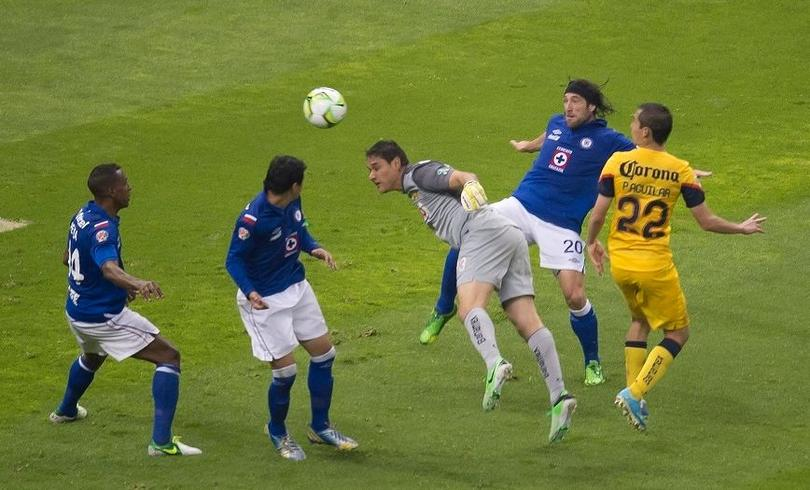

El america y sus rivalidades
| Equipos | LA HISTORIA DE LA RIVALIDAD | IMAGENES |
| GUADALAJARA | Las finales de Copa México en 1954 y 1955, los enfrentamientos que definieron en varias ocasiones el título en la era del Campeonísimo Guadalajara, las polémicas declaraciones dentro y fuera de la cancha de personajes como Fernando Marcos Gonzalez Guillermo Tigre Sepulveda o Jose Antonio Roca, los duelos por el Campeón de campeones de 1964 y 1965, la semifinal 1982-83, la final de liga 1983-84, la rivalidad entre el interior de la república (representado por la ciudad de Guadalajara) y la capital del país, el impulso mediático de rivalidades como mexicanos contra extranjeros, villanos contra héroes, etcétera; promovidas a partir de la compra del club por parte de telesistemas de México y evidentemente el encumbramiento de ambos clubes como las instituciones más exitosas y populares de este país, fueron algunos de los factores que incentivaron, no solo el nacimiento de la rivalidad, sino su alcance como Clásico nacional. |
|
| LOS PUMAS | Esta rivalidad nació con aspectos deportivos y sociales como: la disputa constante por los primeros lugares de la tabla, a lo largo de toda la campaña, en tres temporadas consecutivas (1975-76, 1976-77 y 1977-78); los duelos a nivel de fuerzas básicas en todas las categorías y una aparente diferencia en cuanto a estratos sociales, por un lado el sector estudiantil y de clase media de la Ciudad de México, y por el otro un sector más acomodado y conservador (a pesar de ser la afición americanista nutrida de mayor forma por la clase media). Sin embargo dos factores fueron decisivos para el amalgamiento de esta rivalidad. Primero la construcción mediática de una rivalidad televisiva que enfrentaba al equipo propiedad de Televisa, contra el equipo que era enarbolado como principal bandera de apoyo y transmisión de la cadena gubernamental Imevision. Y segundo las tres finales de liga (1984-85, 1987-88y 1990-91), en especial la primera, que quedó marcada por un polémico arbitraje, y que alimento la animadversión de la afición universitaria contra el equipo de Coapa. |
|
| CRUZ AZUL | La final de liga 1971-72, la de Copa México1974-75, la del capeón de campeones en la misma campaña; el surgimiento de cruz Azul, no solo como dinastía dominante de los años 1970 (casi siempre a costa de América), sino como equipo altamente popular en la Ciudad de México (en detrimento del desaparecido Necaxa, y Atlante), el enfrentamiento constante en fases finales por el título, las habituales rachas positivas de un equipo sobre el otro, entre otros sucesos, permitieron el nacimiento de una rivalidad eminentemente deportiva. |
 |